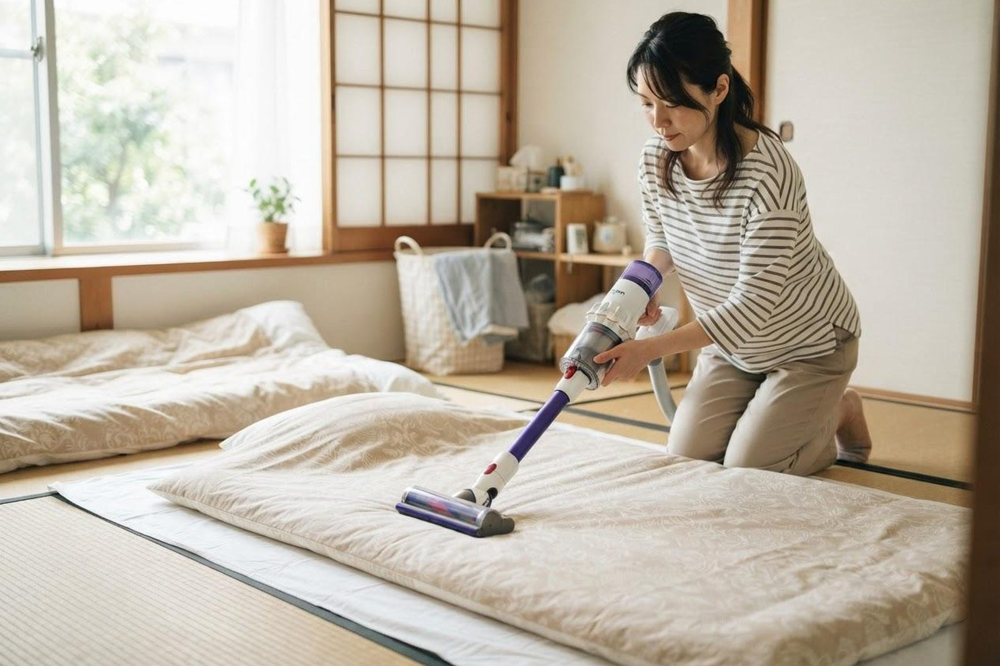

花粉の季節でもないのに、一年中鼻がつまっています。原因は何でしょうか？
A. 回答季節に関係なく鼻づまりや鼻水が続く場合、ダニやホコリ（ハウスダスト）、カビ、ペットのフケ・毛などが原因となる「通年性アレルギー性鼻炎」の可能性があります。花粉症のように時期が限られないため、「体質だから」「いつものこと」と見過ごされやすい症状です。血液検査で原因となるアレルゲン（原因物質）を調べられる場合があり、住環境での対策とあわせて相談することができます。また、副鼻腔炎や鼻の構造の問題が背景にあることもあるため、長く続く鼻づまりは一度ご相談ください。

一年中つづく鼻づまり・鼻水の主な原因
季節を問わず症状が続く場合、次のような原因が考えられるとされています。
- ダニ・ハウスダスト：室内のホコリに含まれるダニのフンや死がいの破片などで、通年性アレルギー性鼻炎の代表的な原因とされています。
- カビ（真菌）：浴室や結露しやすい窓まわりなどで増えた胞子が原因になることがあります。
- ペットのフケ・毛：犬・猫などを室内で飼っている場合、その皮屑（フケ）がアレルゲンになることがあります。
- 副鼻腔炎（ちくのう症）：粘り気のある鼻水や頬・目の周りの重い感じを伴い、アレルギーとは別に鼻づまりを起こす場合があります。
- 鼻の構造の問題：鼻中隔弯曲（左右を仕切る壁のゆがみ）や鼻茸（ポリープ）などが、片側に強い鼻づまりの背景にある場合もあります。
鼻づまりが続くと眠りが浅くなり、日中の眠気や集中力の低下につながることがあるとされています。「たかが鼻づまり」と考えず、生活に支障が出ているようであれば相談の対象になります。
花粉症（季節性）と通年性はどう違いますか？
同じアレルギー性鼻炎でも、原因と症状の出方に違いがあるとされています。
| 項目 | 季節性（花粉症） | 通年性（ハウスダスト・ダニなど） |
|---|---|---|
| 主な原因 | スギ・ヒノキ・イネ科・ブタクサなどの花粉 | ダニ、ホコリ、カビ、ペットのフケ・毛など |
| 症状の時期 | 毎年決まった季節に強く出る | 季節に関係なく一年中つづく |
| 強まりやすい場面 | 屋外に出たとき、風の強い日 | 起床時、掃除のとき、布団の上げ下ろしのとき |
| 目立ちやすい症状 | くしゃみ・水っぽい鼻水・目のかゆみ | 鼻づまりが目立つことが多いとされる |
| 対策の中心 | 飛散情報に合わせて花粉を避ける | 室内のアレルゲンを減らす住環境の整備 |
なお、花粉と室内のアレルゲンの両方に反応する方もおり、その場合は花粉の時期にとくに症状が強まることがあります。
家庭でできる住環境の対策チェック
環境整備は、アレルギー対策の基本のひとつとされています。当てはまらない項目から見直してみてください。
おうちのダニ・ホコリ対策チェックリスト
- シーツ・枕カバーを週1回程度は洗濯している
- 布団は天日干しや布団乾燥機のあと、表面に掃除機をかけている
- 寝室の床は、ゆっくりていねいに掃除機をかけている
- ぬいぐるみ・クッション・カーテンなどの布製品も定期的に洗っている
- 畳やフローリングの上に、厚手のカーペットを敷いたままにしていない
- こまめに換気し、室内の湿度が高くなりすぎないようにしている
- エアコンや空気清浄機のフィルターを定期的に掃除している
- （ペットがいる場合）寝室にはペットを入れないようにしている
ダニは水洗いだけでは死滅しにくく、高温での乾燥や熱水処理が有効とされています。
受診の目安
次のような症状がある場合は、早めにご相談ください。
すぐに受診を検討してください
- 片側だけの強い鼻づまりが続く、繰り返し鼻血が出る
- 粘り気のある黄色・緑色の鼻水が長く続き、頬や目の周りの痛み・発熱を伴う
- 顔の腫れや強い頭痛、目の症状を伴う
- においがまったくわからない状態が続いている
- 鼻づまりで息苦しさが強い、睡眠中に呼吸が止まっていると指摘された
早めの受診をおすすめします
- 市販薬を使っても改善しない、または使い続けないと症状が抑えられない
- 鼻づまりで眠りが浅く、日中の眠気や集中しにくさがある
- 何が原因（アレルゲン）なのかを一度きちんと調べたい
- お子さんの口呼吸・いびき・鼻声が長く続いている
- 咳やのどの違和感、ぜん息のような症状も一緒に出ている
当院での対応・検査（何科に相談する？）
一年中つづく鼻づまり・鼻水は、アレルギー科や内科で相談いただける症状です。当院はアレルギー科を標榜しており、症状の出方や生活環境をお伺いしたうえで、必要に応じて血液検査（採血）を行います。ダニ・ハウスダスト・カビ・ペット・花粉など複数のアレルゲンへの反応を一度に調べられる場合があり、採血自体は数分で終わります。結果は後日の受診でご説明します。
検査や治療は保険診療の対象となります。費用の詳細はお問い合わせください。予約制ではなく当日そのままお越しいただけ、朝7時から診療しています。健康保険証（またはマイナ保険証）と、市販薬を含む使用中のお薬がわかるもの（お薬手帳など）をお持ちください。
診察の結果、副鼻腔炎や鼻中隔弯曲など鼻の構造の問題が疑われ、鼻の中を詳しく確認する必要があると判断した場合には、耳鼻咽喉科へご紹介することがあります。
受診時に伝えていただきたいこと
- いつごろから、どのくらい続いているか
- 一日のうちいつ強いか（起床時・帰宅後・就寝時など）、悪化する場所や場面
- 鼻づまり・鼻水・くしゃみのうち、どれがいちばんつらいか
- ペットの有無、住まいの状況（カーペット・畳・結露やカビの有無など）
- ぜん息・アトピー性皮膚炎・食物アレルギーなどの既往、ご家族のアレルギー体質
参考にした情報
一年中つづく鼻づまり・鼻水でお困りの方は、お気軽にご相談ください
最終更新：2026年8月26日